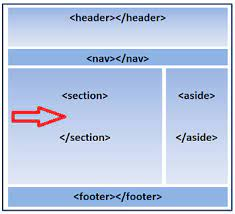

Etiquta SECTION
Un documento web podría dividirse en secciones para un listado de noticias,
información de contactos, etc.
Debemos asegurarnos que todo lo que se encuentra dentro de una etiqueta
SECTION tenga relación.
Se usa para crear contenidos independientes dentro de un documento web.

Etiqueta ARTICLE
Un documento web podria contener un número indeterminado de articulos,
ya que cada uno posee independencia frente a los demás articulos
inclusive dentro del mismo documento web.
En un articulo podrías colocar etiquetas como HEADER, SECTION Y FOOTER.
La diferencia entre ARTICLE y SECTION es que un ARTICLE tiene un acultura
semántica más fuerte que un SECTION.